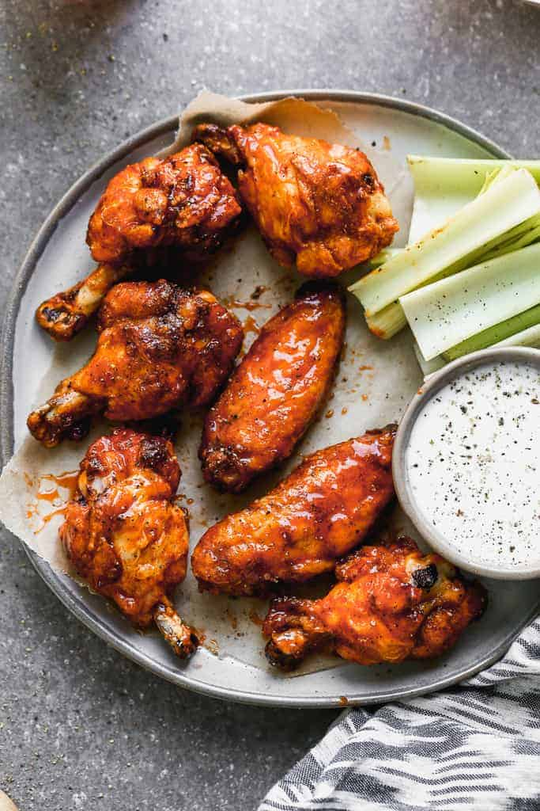

Chicken Wings

Chicken wings are the perfect tailgate snack!
Easy-to-make with an infinite flavor dial, chicken wings are a great go-to
for game day or a lazy day. What you'll need is:
Ingredients
- 4 pounds chicken wings , halved at joints, wingtips discarded
- 2 Tbs baking powder
- 1 tsp
- 3/4 tsp black pepper
- 1 tsp paprika
- 1 tsp garlic powder
- your choice of sauce to flavor
Instructions
- Adjust your oven rack to the upper-middle position. Preheat oven to 425 degrees F.
- Line a baking sheet with aluminum foil and place a wire rack (I use a cooling rack) on top.
Spray the rack with non-stick spray.
- Use paper towels to pat the wings dry and place them in a large bowl.
It's important to dry them REALLY well!
- Combine the salt, pepper, garlic powder, paprika, and baking powder in a small bowl.
Then sprinkle the seasoning over the wings, tossing to evenly coat.
- Arrange wings, skin side up, in single layer on prepared wire rack.
- Bake on the upper middle oven rack, turning every 20 minutes until wings are crispy and browned.
The total cook time will depend on the size of the wings but may take up to 1 hour.
- Remove from oven and let stand for 5 minutes. Transfer wings to bowl and toss with sauce.